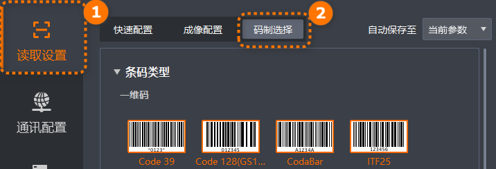

IDMVS码制选择模块支持配置读码器可读取的条码类型、条码个数、读码算法和ROI，适配不同读码场景，方便按需优化读码效果。
在主界面单击，进入码制选择页签，配置相关参数。
不同型号和固件版本的读码器可配置参数可能会有所差异，请以实际显示为准。

选择设备需要读取条码的码制，可选一维码、二维码和堆叠码。
条码周围有橙色框且字符为橙色表示已启用当前条码类型。
不同设备类型的码制有所区别，具体请以实际设备为准。
选择的码制越多，算法处理每张图片的耗时将增加，建议根据实际需求选择对应的码制，以达到最佳效果。
一维码中Pharmacode码制（包含Pharmacode One Track和Pharmacode Two Track）与其他码制不兼容，当开启Pharmacode码制时，不支持开启其他一维码码制；当开启其他一维码码制时，不支持开启Pharmacode码制。同时自适应调谐时，开启Pharmacode码制后不会再自动增加其他一维码码制；开启其他一维码码制后也不会再自动增加Pharmacode码制。
设置单次读码期望识别的条码最大数量，需根据一维码、二维码和堆叠码三种码制类别分别设置其对应的最大识别数量。
条码个数总数量最大值为202。
若实际查找到的个数小于该参数设置值，则输出实际数量的条码。
设置的条码个数越多，算法处理每张图的耗时将增加，建议根据实际需求进行设置，以达到最佳效果。
当进行自适应调谐时，读码器按照实际读取的条码个数自适应调整各码制类型数量。如果调谐成功，您可选择将当前条码个数保存至当前参数或轮询库中；如果调谐失败，恢复调谐前的条码个数。
支持设置以下读码算法参数。
如果常用参数不能满足您的需求，可以单击高级参数显示并配置如下参数。
包括降采样模式和非降采样模式两种。两者模式区别在于是否通过减少数据点数量来降低数据维度，以提高处理效率。
选择条码类型，可选白底黑码、黑底白码或自适应。
条码类型参数选择“一维码”时，可配置此参数。
开启该参数，对Code39码校验位进行校验，防止错识别。
当条码类型中已开启“Code39”码制、条码类型参数选择“一维码”时，可配置此参数。
选择是否将39码内容中的ASCII编码值转换为对应字符输出，开启后输出ASCII字符。例如39码中含有“%V”，开启39 Ascii码读取后输出“@”，关闭后输出“%V”。
当条码类型中已开启“Code39”码制、条码类型参数选择“一维码”时，可配置此参数。
开启该参数，对ITF25码校验位进行校验，防止错识别。
当条码类型中已开启“ITF25”码制、码制类型参数选择“一维码”时，可配置此参数。
开启该参数，对Matrix 25码校验位进行校验，防止错识别。
当条码类型中已开启“Matrix 25”码制、码制类型参数选择“一维码”时，可配置此参数。
开启该参数，对Industrial 2of5码校验位进行校验，防止错识别。
当条码类型中已开启“Industrial 2of5”码制、码制类型参数选择“一维码”时，可配置此参数。
选择是否对Code 11码校验位进行校验及校验模式，防止错识别。可选择如下选项。
未启用：不对Code 11码校验位进行校验。
1位校验模式：对于少于10个字符的数据，选择此模式使用1个校验符进行校验。
2位校验模式：对于10个或更多字符的数据，选择此模式使用2个校验符进行校验。
当条码类型中已开启“Code 11”码制、码制类型参数选择“一维码”时，可配置此参数。
开启该参数，对ChinaPost码校验位进行校验，防止错识别。
当条码类型中已开启“ChinaPost”码制、码制类型参数选择“一维码”时，可配置此参数。
选择是否对MSI码校验位进行校验及校验模式，防止错识别。可选择如下选项。
未启用：不对MSI码校验位进行校验。
1位校验模式(MOD10)：对采用MOD 10算法生成1位校验码的MSI码进行校验。
2位校验模式(MOD10_10)：对采用双重MOD 10算法生成2位校验码的MSI码进行校验。
2位校验模式(MOD11_10)：对采用MOD 11+MOD10算法生成2位校验码的MSI码进行校验。
当条码类型中已开启“MSI”码制、码制类型参数选择“一维码”时，可配置此参数。
选择输出读码结果时是否输出部分码制的开始和结束标志符号，可选如下选项。
未启用：不输出条码的开始和结束标志符号。
39码起止符输出：输出Code39码的开始和结束标志符号。例如不开启时读取Code码输出内容为“1234”，开启后输出“*1234*”。
Codabar码起止符输出：输出Codabar码的开始和结束标志符号。例如不开启时读取Codabar码输出内容为“1234”，开启后输出“A1234A”。
当需要识别的QR码存在畸变时，建议开启该参数。
当条码类型中已开启“ITF25”码制、码制类型参数选择“二维码”时，可配置此参数。
选择要识读DataMatrix码制的类型，可选所有DM码、ECC 140类型DM码或ECC 200类型DM码。
当条码类型中已开启“DataMatrix”码制、码制类型参数选择“二维码”时，可配置此参数。
选择是否启用有条码但未成功读出检测功能。开启后，可在格式化配置页面通过*输出有码无读输出文本和*输出无码输出文 本参数配置对应情况输出的文本，其中“*”为开启的对应通讯协议，不支持客户端SDK协议和FTP协议。
仅开启触发模式后可配置此参数。
选择是否解析符合GS1标准的条码。开启后，将条码/二维码中的原始数据串，根据GS1标准规则，解析成有明确含义的结构化数据字段；关闭则原样输出。
设置读码器读码时对读错码的容忍程度，数值越大错识的概率越低。
IDMVS支持自定义设定一个感兴趣区域，使读码器只对选定的感兴趣区域进行算法识别，其他区域不做算法处理，以提高读码效率。可配置参数如下。
选择自定义设定感兴趣区域的编号。
选择是否开启自定义设定ROI功能，如果开启，可通过配置ROI宽度、ROI高度、ROI左上角顶点X坐标和ROI左上角顶点Y坐标参数自定义设定感兴趣区域。
您也可通过算法ROI工具快速绘制ROI，详情请参见算法ROI工具。